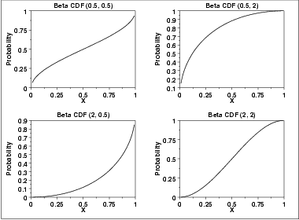
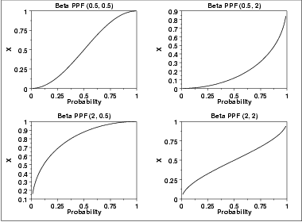

1.3. EDA Techniques
1.3.6. Probability Distributions
1.3.6.6. Gallery of Distributions
1.3.6.6.17. |
Beta Distribution |
\( f(x) = \frac{(x-a)^{p-1}(b-x)^{q-1}}{B(p,q) (b-a)^{p+q-1}} \hspace{.3in} a \le x \le b; p, q > 0 \)
where p and q are the shape parameters, a and b are the lower and upper bounds, respectively, of the distribution, and B(p,q) is the beta function. The beta function has the formula
\( B(\alpha,\beta) = \int_{0}^{1} {t^{\alpha-1}(1-t)^{\beta-1}dt} \)
The case where a = 0 and b = 1 is called the standard beta distribution. The equation for the standard beta distribution is
\( f(x) = \frac{x^{p-1}(1-x)^{q-1}}{B(p,q)} \hspace{.3in} 0 \le x \le 1; p, q > 0 \)
Typically we define the general form of a distribution in terms of location and scale parameters. The beta is different in that we define the general distribution in terms of the lower and upper bounds. However, the location and scale parameters can be defined in terms of the lower and upper limits as follows:
-
location = a
scale = b - a
The following is the plot of the beta probability density function for four different values of the shape parameters.

-
\( F(x) = I_{x}(p,q) = \frac{\int_{0}^{x}{t^{p-1}(1-t)^{q-1}dt}}{B(p,q)}
\hspace{.2in} 0 \le x \le 1; p, q > 0 \)
The following is the plot of the beta cumulative distribution function with the same values of the shape parameters as the pdf plots above.

The following is the plot of the beta percent point function with the same values of the shape parameters as the pdf plots above.

| Mean | \( \frac {p}{p + q} \) |
| Mode | \( \frac {p-1}{p+q-2} \hspace{.3in} p, q > 1 \) |
| Range | 0 to 1 |
| Standard Deviation | \( \sqrt{\frac{pq}{(P+q)^{2}(p+q+1)}} \) |
| Coefficient of Variation | \( \sqrt{\frac{q}{p(p+q+1)}} \) |
| Skewness | \( \frac {2(q-p)\sqrt{p+q+1}} {(p+q+2)\sqrt{pq}} \) |
-
\( p = \bar{x}(\frac{\bar{x}(1 - \bar{x})}{s^2} - 1) \)
\( q = (1 - \bar{x})(\frac{\bar{x}(1 - \bar{x})}{s^2} - 1) \)
For the case when a and b are known, the maximum likelihood estimates can be obtained by solving the following set of equations
-
\( \psi(\hat{p}) - \psi(\hat{p} + \hat{q}) = \frac{1}{n}
\sum_{i=1}^{n}{\log(\frac{Y_i - a}{b - a})} \)
\( \psi(\hat{q}) - \psi(\hat{p} + \hat{q}) = \frac{1}{n} \sum_{i=1}^{n}{\log(\frac{b - Y_i}{b - a})} \)